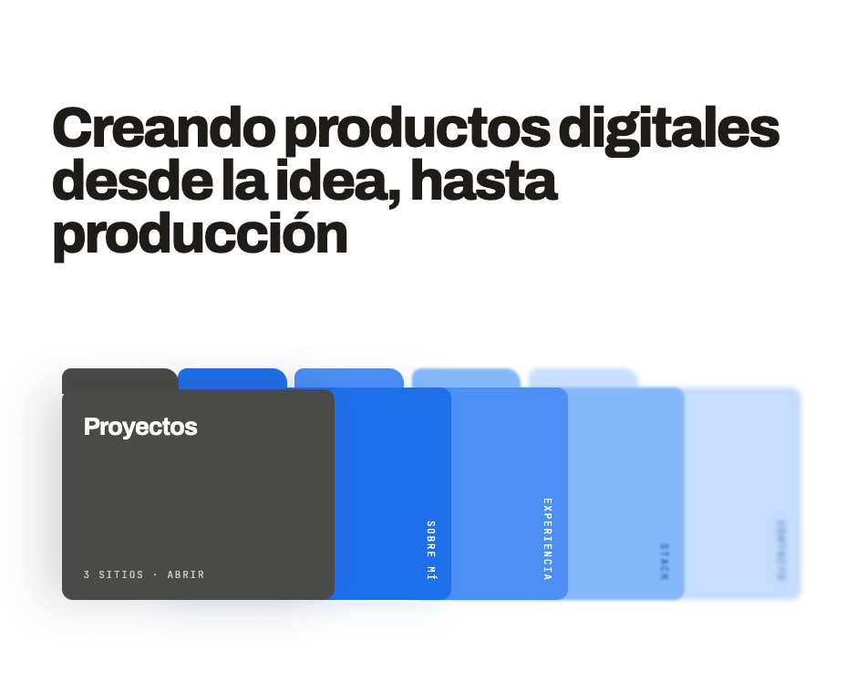
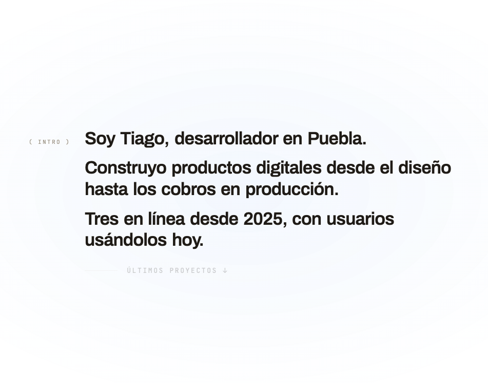
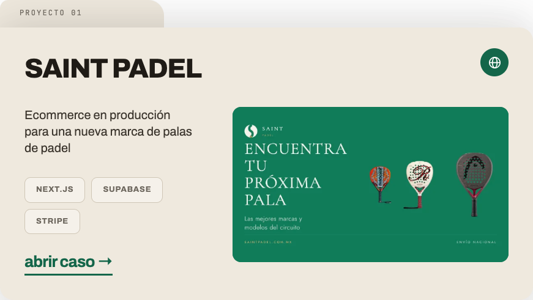
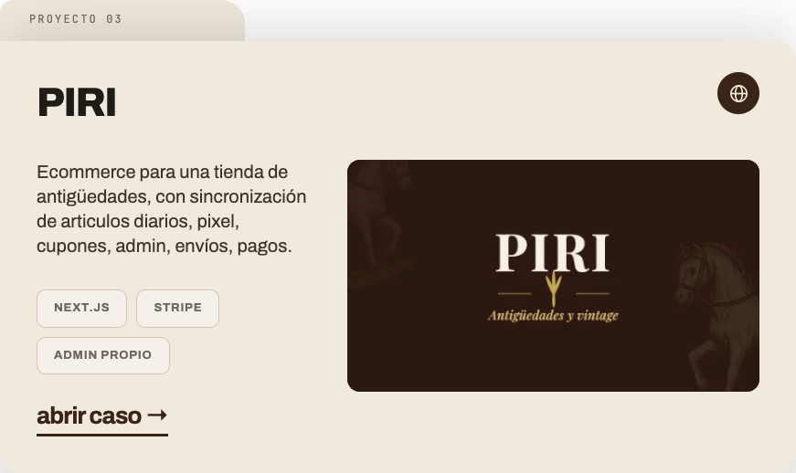
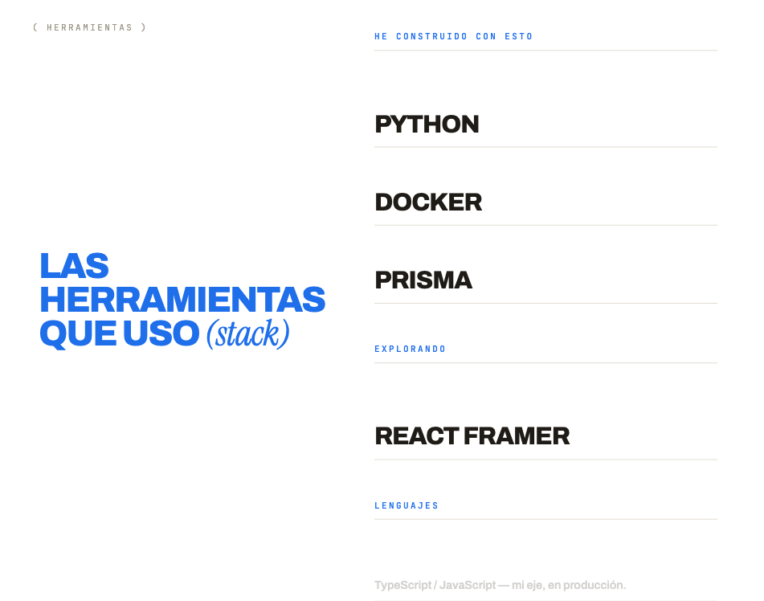
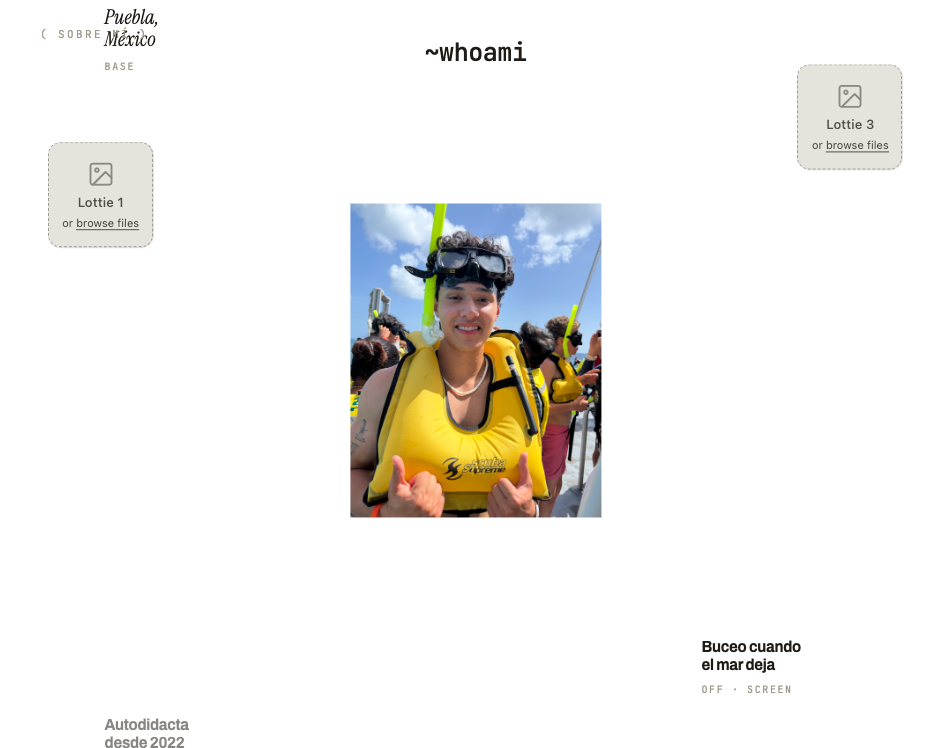
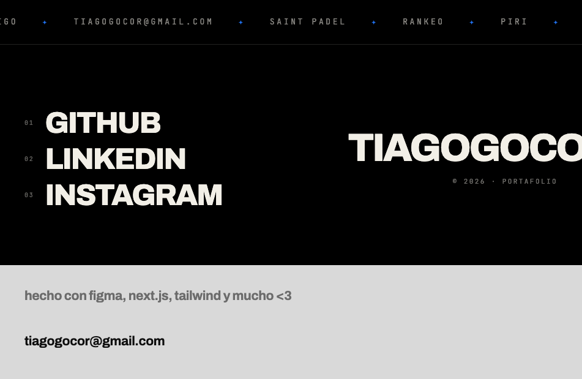
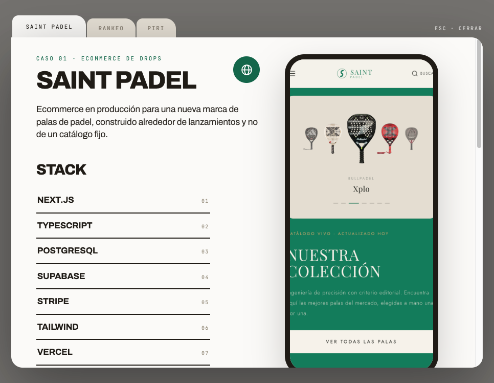

Especificación del sitio tal como está hoy en el prototipo, para reimplementarlo en Next.js con Tailwind y Framer Motion. Todos los valores son los del prototipo, no aproximaciones.
Todo el sitio es una sola ruta. Las secciones son anclas (#top, #intro, #proyectos, #sobre-mi, #stack, #whoami, #contacto) y el detalle de cada proyecto abre en un overlay modal, no en una ruta nueva. Si se quiere URL compartible por caso, la vía mínima es un query param (?caso=saint) leído con useSearchParams, manteniendo el overlay.
app/ layout.tsx fuentes, metadata, <html lang="es"> page.tsx compone las 7 secciones en orden components/ site-header.tsx header fijo, aparece/invierte por scroll hero.tsx titular + abanico de 5 tarjetas intro-reveal.tsx revelado palabra por palabra (sticky 380vh) projects-stack.tsx 3 tarjetas sticky apiladas process.tsx 5 fases + panel de descripción stack-loop.tsx lista en loop vertical (sticky 460vh) whoami.tsx satélites en flujo continuo (sticky 460vh) site-footer.tsx ticker + redes + wordmark case-overlay.tsx modal de caso con tabs content/ projects.ts datos de los 3 casos (fuente única) process.ts las 5 fases stack.ts filas del stack socials.ts, ticker.ts lib/ use-section-progress.ts hook de progreso (ver §4)
| token | hex | uso |
|---|---|---|
| {{ c.name }} | {{ c.hex }} | {{ c.use }} |
Máximo dos fondos por pantalla. Ink sobre crema y blanco sobre azul son los dos únicos pares de texto/fondo del sitio; el resto son superficies de tarjeta.
Tres familias, por Google Fonts (usar next/font/google con display: 'swap'): Archivo 400/500/600/700/800 para todo el cuerpo y titulares; JetBrains Mono 400/500 para eyebrows, etiquetas y numeración; Instrument Serif itálica sólo para acentos (“(stack)”, “Puebla, México”, “padel casi diario”).
| rol | tamaño | peso / interlínea / tracking |
|---|---|---|
| {{ t.role }} | {{ t.size }} | {{ t.rest }} |
Radios. La firma del sitio es la tarjeta con pestaña: cuerpo 0 22px 22px 22px y pestaña 14px 26px 0 0 (268×46px) pegada arriba a la izquierda con margin-top:-1px. Tarjetas del hero: cuerpo 12px, pestaña 10px 16px 0 0. Tabs del modal 12px 20px 0 0. Marco de teléfono: borde 10px #1F1B16, radio 38px, relación 9/19.5. Chips 10px, botones circulares 999px, slots de imagen 14px.
Sombras. Tarjeta de proyecto: 0 -18px 60px rgba(31,27,22,.10), 0 40px 90px rgba(31,27,22,.14) — la segunda sube a .16 y .18 en las tarjetas 2 y 3 para reforzar el apilado. Modal 0 40px 120px rgba(0,0,0,.42). Teléfono 0 30px 70px rgba(31,27,22,.22).
Easing. Un solo easing de interacción: cubic-bezier(.2,.7,.2,1) a 200–260 ms para hovers; cubic-bezier(.2,.8,.2,1) a 380 ms para la apertura del modal. Todo lo ligado a scroll usa easeOutCubic (1-(1-k)³), sin resortes.
Fondo de página #FBFAF8, overflow-x: clip en html y body, scroll-behavior: smooth. Anchos de contenido: hero 1320px, intro / proceso / footer 1180px, tarjetas de proyecto 1100px, modal 1240px. Padding lateral 56px en secciones de texto, 40px en las de tarjetas.
Fijo, z-index: 40, sin fondo ni blur. Fila mono de 11px / 0.14em en mayúsculas: avatar 24px circular + TIAGOGOCO a la izquierda, nav centrado (Proyectos, Sobre mí) con margin: 0 auto, Contacto a la derecha. Dos comportamientos:
#intro llega a 0.35 × innerHeight: opacidad 0→1, translateY(-24px)→0, pointer-events none→auto. Transición 420–480 ms.#sobre-mi cumpla top ≤ 46 && bottom > 46. Ink #1F1B16 / suave #6d675e pasan a #fff / rgba(255,255,255,.78), con transición de color de 380 ms.Cinco secciones son sticky largas: un contenedor de altura fija en vh con un hijo position: sticky; top: 0. Todo el movimiento interno se deriva de dos escalares. En el prototipo se calculan en un loop de requestAnimationFrame; en Next.js el equivalente directo es useScroll de Framer Motion.
// progress(ref) — recorrido de una sección sticky, 0 → 1
// -top / (height - innerHeight)
const { scrollYProgress } = useScroll({
target: ref,
offset: ['start start', 'end end'],
});
// enter(ref) — entrada de un bloque normal, 0 → 1
// (innerHeight*0.92 - top) / (innerHeight*0.75)
const { scrollYProgress: enter } = useScroll({
target: ref,
offset: ['start 92%', 'start 17%'],
});
Reglas que conviene mantener: nada se anima con top / height, sólo opacity, transform y filter: blur; las filas que se mueven llevan will-change: transform, opacity; y las alturas de las secciones sticky son el único “timeline” — cambiarlas cambia la velocidad de todo lo que contienen.
intro 380vh · proyectos 3 × 145vh · proceso 350vh · stack 460vh · whoami 460vh
#top
Alto mínimo 100vh, flex-direction: column; justify-content: space-between: titular arriba, abanico abajo. Padding clamp(80px,15vh,190px) 56px clamp(60px,12vh,130px).
Degradado. Un span absoluto que sangra a todo el ancho (left/right: calc(-50vw + 50%)) y ocupa el 50% superior: linear-gradient(to bottom, rgba(31,111,235,.28), .16 al 34%, .06 al 64%, 0 al 100%). Es el estado “marcado”; existen variantes al 0.14 (“sutil”) y sin degradado.
Titular. “Creando productos digitales desde la idea, hasta producción”, max-width: 20em, peso 800, clamp(38px,6.4vw,96px), interlínea 0.94, tracking −0.045em.
Abanico de 5 tarjetas. Contenedor min(816px,100%) × clamp(220px,34vh,320px), tarjetas absolutas de ancho 36.76% cada una, con left en 0 / 15.68% / 31.37% / 47.06% / 62.75% y z-index descendente 5→1, así que la primera queda encima. Cada una es una pestaña + un cuerpo, ambos del mismo color:
| z | etiqueta | color | destino | blur |
|---|---|---|---|---|
| {{ h.z }} | {{ h.label }} | {{ h.color }} | {{ h.href }} | {{ h.blur }} |
Las etiquetas van en writing-mode: vertical-rl, mono 11px / 0.16em, abajo a la derecha (bottom: 20px; right: 14px). La tarjeta “Proyectos” es la excepción: título horizontal de clamp(20px,2.8vw,30px) a 44px del borde superior y la línea “3 sitios · abrir” abajo a la izquierda. Hover: translateY(-16px), blur → 0, z-index: 9, 240 ms.
#intro · 380vh
Sticky centrado, ancho 1180px, con una columna izquierda fija de eyebrow “( intro )” (mono 11px / 0.22em, #a09889, padding-top: 18px) y 28px de gap. Resplandor de fondo: radial-gradient(120% 90% at 50% 50%, rgba(31,111,235,.05), transparent 62%).
Tres párrafos de peso 600, clamp(30px,3.6vw,54px), interlínea 1.14, tracking −0.028em, maquetados como flex-wrap con column-gap: .28em; row-gap: .06em — cada palabra es un span inline-block independiente. El texto es:
// revelado palabra por palabra. total = nº de palabras de los 3 párrafos const head = p / 0.82; // termina al 82% del recorrido const start = i / total; // i = índice global de la palabra const window = 1.35 / total + 0.06; // solape entre palabras vecinas const k = clamp((head - start) / window, 0, 1); const e = 1 - Math.pow(1 - k, 3); // easeOutCubic opacity = 0.10 + 0.90 * e translateY= 14px * (1 - e) blur = 5px * (1 - e) color = e > 0.55 ? '#1F1B16' : '#8d8578' // salto duro, sin lerp
Cola. Debajo, una regla de 64×1px #d8d2c7 y el enlace “Últimos proyectos ↓” (mono 13px / 0.2em) aparecen con opacity = clamp((p - 0.84) / 0.12, 0, 1).
#proyectos

Tres bloques hermanos, cada uno position: sticky; top: 0; height: 145vh, con align-items: flex-start. El apilado sale de tres valores que crecen juntos: padding-top 8vh / 12vh / 16vh, z-index 1 / 2 / 3 y la sombra inferior .14 / .16 / .18. No hay animación por scroll: la tarjeta siguiente sube sola y tapa a la anterior dejando 4vh de la de atrás a la vista. La sección cierra con padding-bottom: 12vh.
Anatomía de la tarjeta (ancho máx. 1100px). Pestaña 268×46px del color de la tarjeta; cuerpo con padding 34px 40px 40px. Dentro: etiqueta “proyecto 0N” absoluta a top:12px; left:32px (mono 12px / 0.18em) sobre la pestaña; fila con el nombre a 44px peso 800 y, a la derecha, un botón circular de 46px con el icono de globo (SVG 23px, stroke-width 1.8: círculo r=9, elipse rx=4 ry=9, línea horizontal); y una rejilla 300px 1fr con gap 40px: descripción de 20px / 1.35 + chips + botón “abrir caso →” a la izquierda, imagen 16/9 con radio 14px a la derecha.
Los chips son padding: 10px 18px, radio 10px, borde 1px del tono medio de la tarjeta, fondo rgba(255,255,255,.35), texto 13px peso 700 en mayúsculas con tracking 0.06em. El botón “abrir caso →” es texto de 26px peso 700 con border-bottom: 3px del color de acento y opacity .6 en hover; abre el overlay del caso correspondiente.
| tarjeta | superficie | borde chip / texto | acento (botón) | chips |
|---|---|---|---|---|
| {{ p.name }} | {{ p.bg }} | {{ p.chip }} | {{ p.accent }} | {{ p.tags }} |
#sobre-mi · 350vh
Único bloque azul #1F6FEB con texto blanco. Sticky centrado, 1180px, padding vertical 8vh. Orden: eyebrow “( proceso creativo )”, titular “QUÉ HAGO Y CÓMO” (clamp(34px,4.4vw,66px), peso 800, interlínea 0.98, tracking −0.035em), párrafo de max-width: 560px al 74% de blanco, y una rejilla minmax(0,1.35fr) minmax(200px,.65fr) con gap 56px.
Lista de fases. Cinco filas separadas por border-top: 1px solid rgba(255,255,255,.22) (más una regla de cierre al final), cada una con el número en mono 12px y la etiqueta en peso 700 clamp(18px,2.1vw,30px), alineadas por baseline con gap 20px y padding vertical clamp(10px,1.6vh,18px). La columna derecha muestra “( 0N )” y la descripción de la fase activa.
Interacción. La fase activa se fija con mouseenter y con click (para touch); arranca en la 1. La fila activa va a opacidad 1, las demás a 0.44 — multiplicado por su progreso de entrada. Transición sólo de opacidad, 260 ms. En teclado, convertir las filas en botones de un role="tablist": hoy no son focusables.
// stagger de toda la sección: q = progress(#sobre-mi) / 0.7
const step = (i) => {
const k = clamp((q - i * 0.10) / 0.22, 0, 1);
const e = 1 - Math.pow(1 - k, 3);
return { opacity: e, y: 26 * (1 - e) }; // px
};
// i = 0 eyebrow · 1 titular · 2 párrafo · 3+n fase n · 3+5 panel derecho
Las cinco fases, verbatim: 1 Spec antes que código · 2 Diseño del sistema visual · 3 Datos y permisos primero · 4 Implementación por fases, con cierre · 5 Despliegue y operación. Las descripciones largas viven en content/process.ts.
#stack · 460vh
Sticky de 100vh con overflow: hidden, partido en dos columnas absolutas: 46% izquierda con el titular fijo “LAS HERRAMIENTAS QUE USO (stack)” en azul #1F6FEB (clamp(30px,4.6vw,68px), peso 800, interlínea 0.94, tracking −0.04em) y 54% derecha con la lista en movimiento. Eyebrow “( herramientas )” a top:26px; left:40px. Fondo blanco puro, no crema.
La lista tiene 19 filas de tres tipos, y el tipo define el estilo. h (encabezado): mono clamp(11px,1vw,14px), peso 500, tracking 0.22em, mayúsculas, azul. i (herramienta): Archivo peso 800, clamp(24px,3.2vw,50px), tracking −0.035em, mayúsculas, ink. n (nota): Archivo peso 600, clamp(14px,1.5vw,21px), color #5a5449. Cada fila lleva border-bottom: 1px solid #e2ddd3 y padding-bottom: clamp(10px,1.4vh,18px).
// loop vertical infinito. r = progress(#stack) const SP = 13; // separación entre filas, en vh const TOTAL = rows.length * SP; // 19 * 13 = 247vh const shift = r * TOTAL; // un recorrido completo = una vuelta // por fila i: const pos = ((i * SP - shift) % TOTAL + TOTAL) % TOTAL; const y = pos - SP; // vh const opacity = clamp(min((100 - y) / 14, (y + SP) / 14), 0, 1);
Es decir: las filas suben, se desvanecen en los 14vh de cada borde y reaparecen por abajo. Un recorrido de scroll = exactamente una vuelta, así que la lista nunca se corta a media transición. En Framer Motion, un useTransform(scrollYProgress, v => …) por fila alimentando un motion.div con y y opacity en su style.
#whoami · 460vh
Sticky de 100vh sobre fondo blanco. Fijos en el centro: el título ~whoami en mono peso 500, clamp(22px,2.6vw,40px), a top: 8%, y el retrato de min(26vw,360px) en relación 4/5 (object-position: 50% 18%), sin radio. Los dos derivan lentamente con translateY(-7vh × w).
Ocho satélites en cuatro carriles: left: 5% y left: 11%, right: 5% y right: 11%. Los carriles al 5% llevan cuadros 1/1 con radio 14px y fondo #EFEBE4 (destinados a Lotties); los del 11% llevan texto. Contenido y fase de cada uno:
| fase | carril | ancho | contenido |
|---|---|---|---|
| {{ s.phase }} | {{ s.lane }} | {{ s.w }} | {{ s.content }} |
// flujo continuo: entran por abajo, cruzan, salen por arriba. w = progress(#whoami) const t = (phase + w * 1.25) % 1; // 1.25 vueltas por recorrido const y = 104 - t * 130; // 104vh → -26vh const opacity = clamp(min(t / 0.12, (1 - t) / 0.14), 0, 1);
Nota de implementación: los textos tipo “Puebla, México” y “padel casi diario” usan Instrument Serif itálica; “Autodidacta desde 2022” y “Buceo cuando el mar deja” usan Archivo peso 700. Las etiquetas mono en #a09889 (“base”, “off · screen”) son opcionales por satélite.
#contacto
Tres franjas. Ticker: fila de width: max-content con la lista duplicada y animation: 26s linear infinite de translate3d(0,0,0) a translate3d(-50%,0,0); mono 13px / 0.28em al 55% de #F2EFE7, separador ✦ en azul, padding vertical 26px, borde inferior al 14%. Ítems: disponible para proyectos · puebla · méxico · producto · diseño · código · tiagogocor@gmail.com · saint padel · rankeo · piri.
Cuerpo negro (1180px, padding clamp(70px,14vh,150px) arriba): a la izquierda las tres redes como enlaces enormes — número mono clamp(10px,1vw,13px) + etiqueta peso 800 clamp(30px,5vw,76px), tracking −0.04em, gap 18px; en hover, color azul y translateX(26px) en 320 ms. A la derecha el wordmark TIAGOGOCO en clamp(34px,6.6vw,104px), interlínea 0.86, tracking −0.05em, que entra desde translateX(46px) a 0 según enter(footer), y debajo “© 2026 · portafolio”.
Barra gris #D9D9D9: “hecho con figma, next.js, tailwind y mucho <3” en #6b6b6b y el mailto tiagogocor@gmail.com en #0d0d0d, ambos peso 700 clamp(18px,2.2vw,30px), separados 42px; hover del mailto: azul y translateX(10px).

position: fixed; inset: 0; z-index: 90, padding clamp(12px,3vh,40px). Backdrop rgba(31,27,22,.62) con backdrop-filter: blur(6px), aparece en 260 ms y cierra al click. Panel de min(1240px,100%) × min(92vh,940px), entra con opacidad 0→1, translateY(26px)→0 y scale(.985)→1 en 380 ms.
Tabs. Tres pestañas sobre el panel, mono 11px / 0.16em, radio 12px 20px 0 0, gap 2px. Activa: fondo #FBFAF8, texto ink, padding 14px 26px 13px. Inactiva: #E7E1D6, texto #8d8578, padding 11px 22px 10px — la diferencia de padding es la que “levanta” la activa, con transición de 200 ms. A la derecha, “esc · cerrar”.
Comportamiento. Escape cierra; al abrir o cambiar de caso, body pasa a overflow: hidden y el scroll interno vuelve a 0. Pendiente para la implementación real: role="dialog" aria-modal, focus trap, devolver el foco al botón que abrió, y compensar el ancho del scrollbar al bloquear el body.
Contenido, en orden. (1) Cabecera en rejilla 1.15fr 0.85fr: eyebrow “caso 0N · tipo” en el color de acento, título clamp(38px,5vw,66px) peso 800, botón circular de 52px al sitio en vivo, lede clamp(17px,1.8vw,23px) a 34em; a la derecha, el primer teléfono. (2) Bloque STACK: título 800 clamp(26px,3vw,38px) y lista de máx. 340px, cada ítem con border-bottom: 2px solid #1F1B16, nombre en mayúsculas peso 700 y número mono a la derecha. (3) Problema / Solución en dos columnas auto-fit minmax(260px,1fr) sobre un border-top: 2px. (4) Decisiones técnicas: tres párrafos con la primera frase en negrita ink y el resto en #5a5449. (5) Aprendizaje: bloque de radio 26px con fondo de acento y su tinta, junto al segundo teléfono. (6) Reseñas, sólo si el caso las tiene: tarjetas #F4F1EA radio 20px, borde #ddd6ca, estrellas #C79A3A + “verificada”, cita, y autor con el artículo comprado en mono. (7) “Siguiente: NOMBRE →” abajo a la derecha, que rota entre los tres casos.
Todo el contenido de proyectos sale de un solo arreglo; la tarjeta de la sección y el overlay son dos vistas del mismo objeto. Nombres tal como están hoy en el prototipo.
export type Project = {
id: 'saint' | 'rankeo' | 'piri';
n: '01' | '02' | '03';
title: string; // SAINT PADEL
short: string; // etiqueta del "siguiente"
tab: string; // saint padel
kind: string; // ecommerce de drops
href: string; // sitio en vivo (o '#contacto' si no hay)
accent: string; // color del eyebrow, botón y bloque aprendizaje
accentInk: string; // tinta sobre accent
cardBg: string; // superficie de la tarjeta en #proyectos
cardChipBorder: string;
teaser: string; // 20px en la tarjeta
teaserTags: string[]; // 3 chips
lede: string; // párrafo del overlay
problema: string;
solucion: string;
stack: string[]; // numerado 01..N en el overlay
decisiones: { n: string; title: string; note: string }[];
aprendizajes: string[];
shots: { src?: string; alt: string }[]; // 2 capturas verticales
resenas?: { q: string; by: string; item: string }[];
};
Los otros arreglos son planos: process (n, label, desc), stackRows (k: 'h'|'i'|'n', t), socials (n, label, href), ticker (string[]) y satellites (phase, lane, width, kind: 'lottie'|'text').
Las imágenes que hoy están en el prototipo van exportadas junto a este documento, en assets-export/ (WebP) y uploads/. Sugerencia de destino: public/img/… y servirlas con next/image; sólo el retrato y el avatar necesitan priority nulo — nada del hero es imagen.
| archivo | dónde va | encuadre |
|---|---|---|
| {{ a.file }} | {{ a.where }} | {{ a.fit }} |
#contacto.Responsive. El prototipo es desktop y todo lo tipográfico ya es fluido con clamp(), así que sobrevive hasta ~1024px. Debajo hay cuatro cosas que hay que decidir explícitamente: la rejilla 300px 1fr de las tarjetas de proyecto y la 1.15fr 0.85fr del overlay pasan a una columna; el abanico del hero, con tarjetas de 36.76% superpuestas, necesita otra forma en móvil (carrusel o pila); las secciones sticky de 380–460vh son mucho scroll en un teléfono, conviene bajarlas a 200–260vh; y el whoami de ocho satélites en carriles laterales no cabe — la vía corta es reducirlo a un carril central de cuatro.
Accesibilidad. Pendientes concretos: las filas de fase deben ser button; el overlay necesita role="dialog", focus trap y retorno de foco; los tabs, role="tab" con aria-selected; el ticker, aria-hidden por ser decorativo. Bajo prefers-reduced-motion: parar la marquesina, y en las secciones sticky mostrar el estado final (opacidad 1, sin desplazamiento ni blur) en lugar de animar — el contenido no debe depender del scroll para ser legible. Los botones circulares de 46px ya cumplen tamaño táctil; los enlaces mono de 11px del header son el punto más justo de contraste, mantener #6d675e como mínimo sobre crema.
Rendimiento. Un solo suscriptor de scroll para toda la página (o los useScroll de Framer, que ya comparten un rAF). El prototipo re-renderiza sólo cuando algún progreso cambia más de 0.002 y sólo alterna las banderas de header con transiciones discretas; con Framer, mantener el valor en MotionValue y no en estado de React para no re-renderizar por frame. Las palabras de intro (≈25 spans) y las 19 filas del stack son los dos únicos puntos con muchos nodos animados.
@theme de Tailwind + fuentes con next/font; verificar los tres tamaños de titular contra las capturas.content/*.ts con los tipos de §7, antes de cualquier componente.prefers-reduced-motion, móvil y metadata / OG.fin del documento · las capturas de referencia están en spec-shots/ y los assets en assets-export/